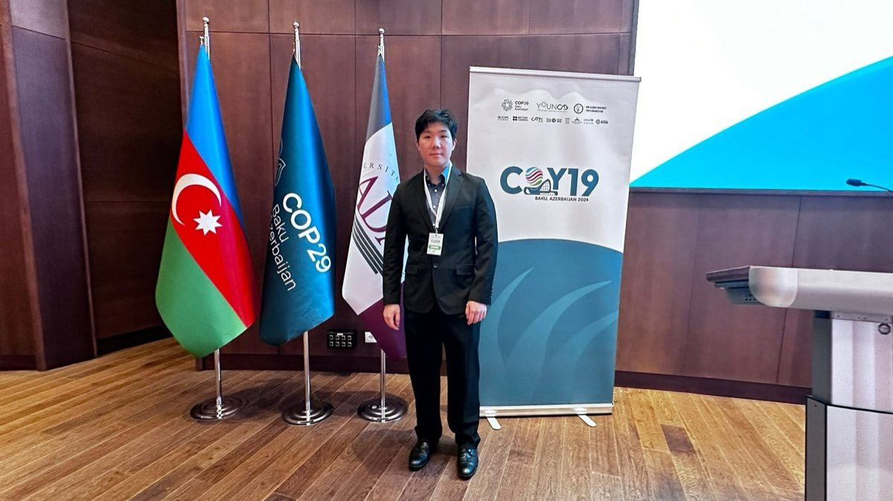
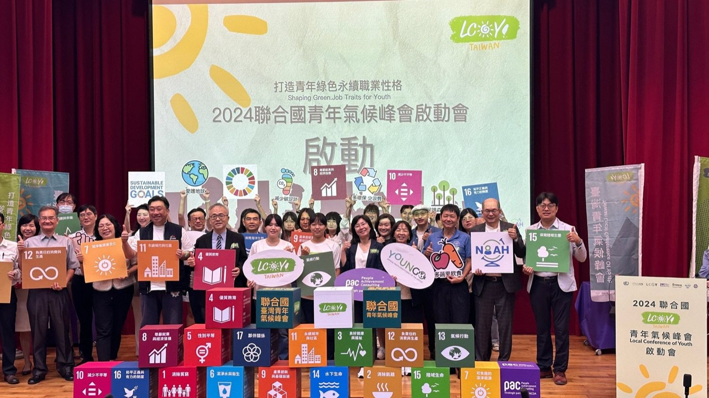
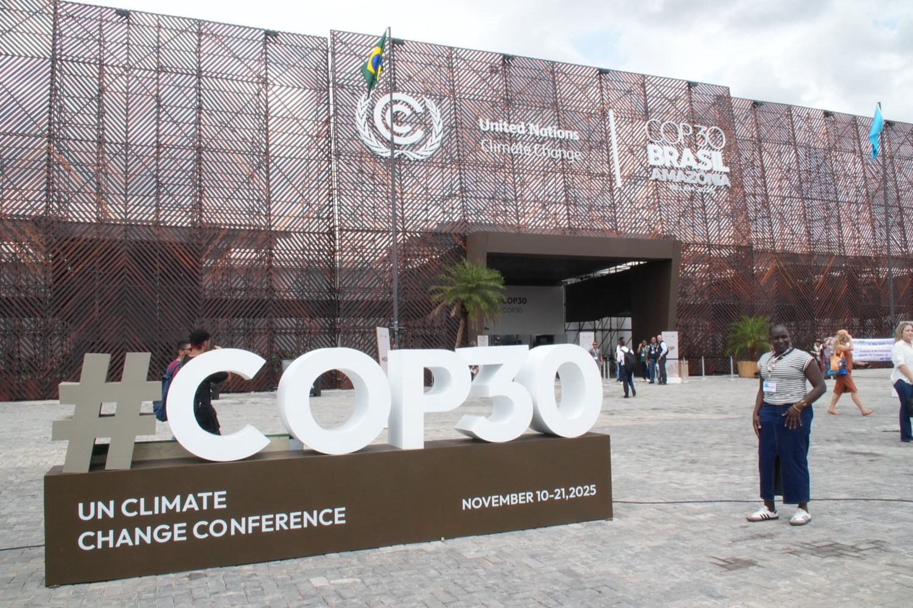
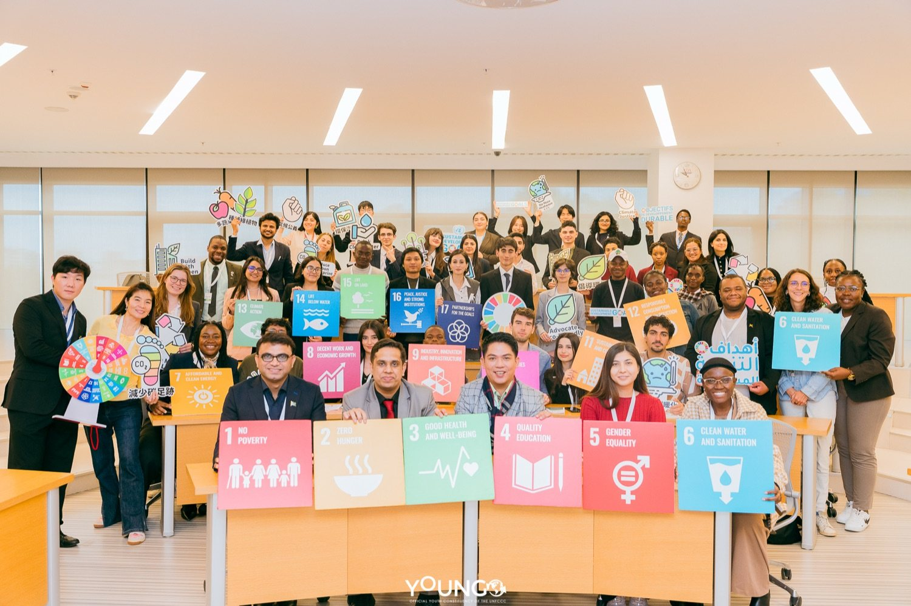
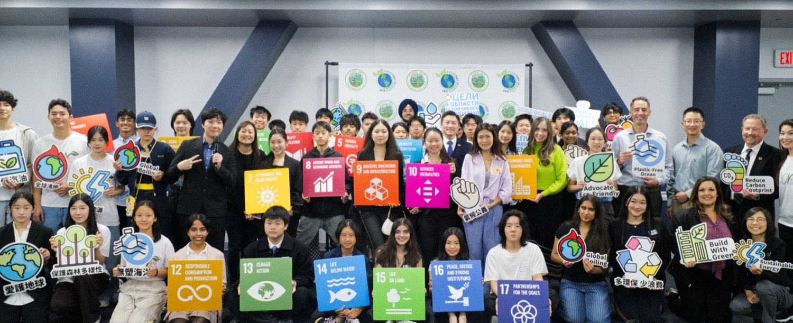
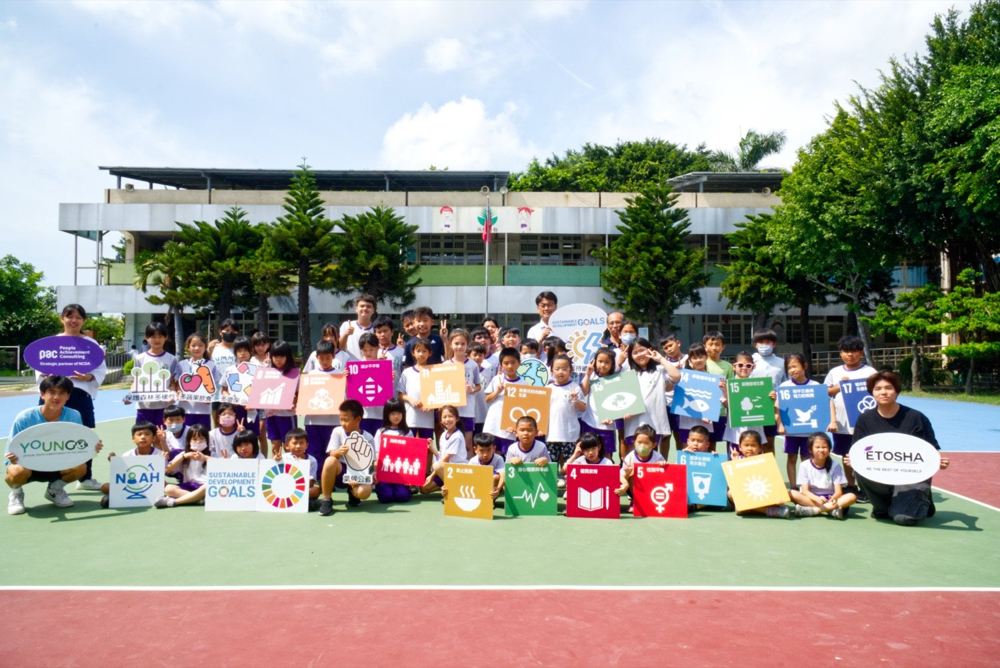
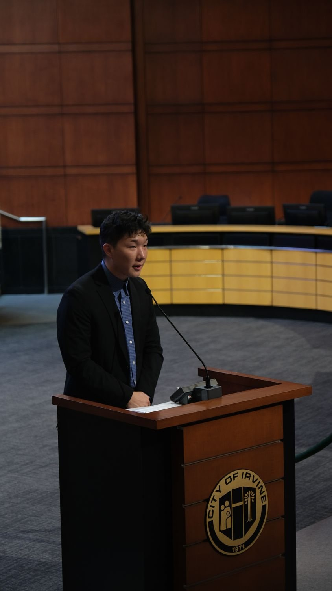

Member of UNFCCC YOUNGO, International Ambassador for LCOY Taiwan, and a UCLA graduate. Through My Culture Connect, Edward opens real international stages for Taiwan's students — UN climate summits, SDGs teaching, and cross-border project-based learning. As founder of Youth Network, he secured Taiwan's official right to host LCOY Taiwan 2026.

Edward Huang is based in Irvine, California, holding a Master's degree from UCLA. He is a member of YOUNGO, the official Children and Youth Constituency of the UNFCCC, and has been actively engaged in youth climate action since 2023, taking part in the Global Conference of Youth (COY) and related initiatives.
As International Ambassador for LCOY Taiwan and a youth coach, he guides students in connecting their own interests with the UN Sustainable Development Goals (SDGs) — amplifying the voices of youth and children, and raising Taiwan's visibility and impact in global climate action.
From the UN-recognized youth forum to a K-16 school framework, corporate ESG, and how to get in touch.
The UN-recognized youth climate forum — why it matters, and why Taiwan's young people should take part.
Learn more → 🪜 School ProgramA K-16 sustainability & English framework schools can plug into the curriculum they already run.
See the K-16 ladder → 🏢 For Companies · ESGConnecting companies' sustainability goals with youth talent, green jobs, and the UN climate stage.
For ESG partners → 🤝 Youth NetworkWho should reach out — universities, schools, sustainability offices — and how to arrange a meeting.
Contact Youth Network →The UN-system acronyms that come up most in Edward's work.
From Irvine to Baku, Belém and Okinawa — and from Taiwan's rural classrooms to the UN floor.






UN youth climate summits, Taiwan–US youth exchange, and rural bilingual education.
Edward's Youth Network was officially authorized by YOUNGO to host LCOY Taiwan 2026 — passing at the highest honour without interview. Only 113 countries hold this status.
For LCOY Taiwan, SDGs project courses or cross-border PBL, reach out to Edward and Youth Network directly.